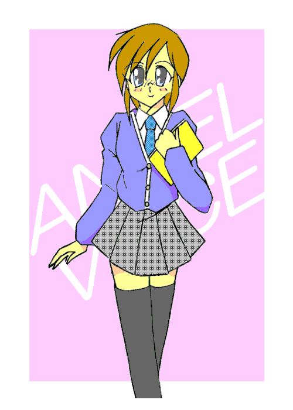
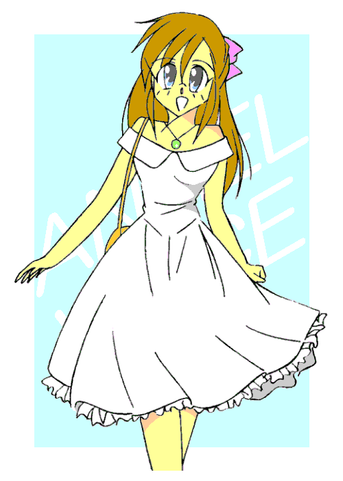

戻る
東京、秋葉原──
前に何度か来たことのある、メイド喫茶「Ｔｗｉｎｋｌｅ☆Ｓｔａｒ」。
俺はそこに呼び出されていた。
営業時間はとうに過ぎている。だから客は俺一人の貸しきり状態だった。
人に聞かれたくない話？ しかし客こそいないが、メイドさんたちはまだいるよな……彼女たちはいいのかな？
「ごめんなさいね、ハル……六木（むつき）くん。こんな時間に呼びだしたりして」
六木というのは俺の名前。フルネームは六木初春（はつはる）。こないだ２２歳の誕生日を迎えたばかり。
一月生まれだから初春──かはは、安直。ご丁寧に苗字も一月の別名・睦月と同じ音だし。
そんな俺の目の前には、かつてこの店でメイドとして働いていた女性が座っている。
当時から細やかな印象の人だったが、今はその物腰に、さらに拍車が掛かっていた。
「あ、いえ、いつも通り『ハル』でいいっすよ。それと呼び出しはいいんですけど……火浦さんこそ大丈夫ですか？」
今は一月。当たり前だが寒い。今日はかなり冷え込んでいる。もし降ってきたらまず雪だろうが、快晴なので冬の安定した気候でその急変はまずないだろう。
心配しているのは天気のことじゃない。
「大丈夫よ。お医者様もウチの人も外出を許してくれたわ」
その女性は優しい声で返答した。そして付け加えた。
「それから六木くん、今は『火浦』じゃなくて『千葉』よ……千葉沙羅」
そういうと目の前の女性は左手をかざした。薬指には結婚指輪が嵌まっている。
しかし変われば変わるもんだなぁ……あれだけ厳しかった演出家兼男性俳優の火浦一星が、今では子持ちの主婦とはね──
「実家の事情で田舎に帰った」と聞かされていた火浦さんが、女性になってしかも妊娠した状態で目の前に現れたときは、そりゃもう驚いた。
もちろん最初は信じられなかったが、本人と俺たちしか知らないことを話してくれたのと、研究員らしき人の説明で劇団員みんなが理解した。
そしてこれは火浦さん本人の希望だったらしい。男の「火浦一星」はもういなくて、ここにいるのは「千葉沙羅」という名の女性であると──
それを身近なところから説明していったらしい。もっとも火浦さんを慕っていた女性にはかなり泣かれたらしいが、それすら “女として” 気持ちがわかってしまったとか。
けたたましい赤ん坊の泣き声が響いて、俺は我に返った。
「沙羅さぁん、どうしよう？ 赤ちゃんが泣き出して……」
店の厨房からセミロングヘアの中学生女子──という触れ込み（設定）の少女メイド・ラビちゃんが、それこそ泣きそうな表情で赤ん坊を抱いて出てきた。
「かしてくださいラビちゃんさん。自分、これでもちっちゃい子あやすのは得意スから」
金髪のツインテールが目を引く、「Ｔｗｉｎｋｌｅ☆Ｓｔａｒ」名物のツンデレメイド愛美子さんが、赤ん坊を優しく抱きかかえると百面相を披露する。
「待ってて。今ミルク温めてあげるから……」
奥から穏やかな雰囲気の女性コック──厨房担当のナツメさんが顔を見せた。おしめじゃなくて、ミルクの時間ということか。
それにしても、この人も随分イメージが変わったよな。以前はつっけんどんな雰囲気だったのに、今じゃすっかり柔らかくなっちゃって。
「それで、話というのは？」
このままいたら埒があかないので、こちらから切り出した。
あやされる赤ん坊──自分の子供を微笑みながら見つめていた火浦さん……千葉さん……沙羅さんでいいか？ は、視線をこっちに戻してきた。
うわ……しぐさがめちゃくちゃ女っぽい。こんなにまで女性化するシステムだったのか……
「あのね……ハルくん──」
言いにくそうにしていた沙羅さんが、やっと正面を向いて切り出した。
「……ちょっとの間、女の子になってみない？」
「は……？」
沙羅さんの言葉は、俺のアタマを止めるのに充分な力があった。
Ａｎｇｅｌ Ｖｏｉｃｅ
作：城弾
「は……？」
これが他の奴に言われたのなら笑い飛ばしているところだが、目の前には実際に男から女に変わった実例がいる……
笑えない。
「えっと、あの……どういうことです？」
「実はね──」
沙羅さんはいちから事情を説明してくれた。
秘密実験で女になったのは自分だけでなく、ここのメイドが全員「元・男性」だということ。つまり、赤ん坊をあやしている愛美子さんやラビちゃん、厨房にいるナツメさんも沙羅さんと同じ被験者というわけだ。
そしてその「研究」が、次の段階に入ったということ。
「……まさか俺に、メイドになれと？」
「残念だけどこのお店の営業期間延長も三月まで。でも、あなたはメイドも『やる』かも──」
なんじゃそりゃ？
「次の段階では私たちみたいにまとめないで、モニターを個別にするらしいの」
そばに寄ってきた店長のかなめさんが説明を引き継いだ。ううむ……この人も男だったのか？ 言われて見ればそんな雰囲気はあるかもだが。
「でもなんでそんな面倒なことを？ 事情を知るものが一緒の方が楽でしょう？」
浮かんだ疑問そのままぶつける。
「今度のモニターは、『違う性別で自立できるかどうか』なの。私たちは同じ立場だから支えあってきたけど、その支援が期待できない状況での心理の変化などを見たいのよ」
「確かにみんなと一緒じゃなかったら、不安でしょうがなかったかもね」
「そうでなくても情緒不安定になったし」
かなめさんに続く説明は四人目の麻耶さん。そのあとはラビちゃん。
精神的に不安定になって、一気に精神が女性寄りになったということか？ だから残りの人生すべてを女性として生きる選択をしたと──
今度は被験者を意図的にそういう状況にするのか。要するに元・男性がどれだけ「純正の」女性に溶け込めるかというデータを集めるらしい。
「職業もできるだけバラバラにしたいという話なの。それであなたのことを思い出したのよ」
「ばらばらに？」
「どのみち顔を合わせることもないので特別に教えるけど、今回の被験者には警察官とかロック歌手もいるのよ」
「警官が何でそんな実験に？ メリットはないでしょう？」
「痴漢のおとり捜査専門になるとか聞いたわ」
かなめさんが教えてくれた。ということは──
「えーと、つまり俺に女性声優になれと？」
一応は劇団に所属しているが、俺は声の仕事をメインにしている。いわゆる「声優」というやつだ。
子役時代からやっていたので芝居にはそこそこ自信はあるが、どうにも凡庸らしい。
だからか主役に縁がなく、逆にそれを買われてかアニメや吹き替えで端役が多い。いわゆる番組レギュラー──アクション系の作品でチンピラと被害者を同じ回でやったこともある。学園ものだったら生徒Ａと不良Ｂという具合だ。
その仕事もこの番組改変期で全部なくなってしまい、懐具合も少しさびしくなってきた。
「女の子としての経験をしたら、演技者として一皮剥けるかも──と思ってあなたに声をかけたの」
「う〜ん……」
確かにそんな経験は普通できない。何か劇的に変わるのは期待できる。
なにしろ沙羅さんはおなかを痛めて子供を産むほどだ。
沙羅さんの後を追ったりしないだろうな……俺。
それはさておき、声の仕事で女性となると、そっちの方が俄然有利になる。
声が高いのがその理由。女性の役はもちろん、子供の役もできるし、男の子役もある。つまり、男性声優に比べて遥かに役の選択肢が増えるのだ。
「…………」
ちょっと気持ちが揺らいた。
能沢眞沙子さんという「男の子役の神様」とまでいわれる女性声優さんがいる。だけど女性は本物の男が経験したことを経験していない。まあ、だからこそ純粋に「理想」だけを追い求めて演技できるともいえるけど……
とにかく俺が女性声優になったら、元々男であるアドバンテージが活かせるはず。
悪くない気がしてきた。しかし、やはり不安が残る。
「ちょっと……考えさせてくれますか？」
さすがに即決はできずに保留させてもらった。
「わかったわ。わたしたちも最初はいろいろ悩んだし、すぐに返事はできないわね──」
沙羅さんはそう言って、柔らかな笑みを浮かべた。
「はぁ……」
次の日──
とあるスタジオで、俺は盛大にため息をついていた。
「どうしたんだよ。ハル」
俺に声をかけてきたのは、同じ声優仲間の神楽坂大哉（かぐらざか だいや）。
凄い名前だが芸名じゃなく本名だ。「ダイヤのように輝け」という願いを込めて命名されたらしい。
顔は並だが声はめちゃくちゃ良い。声優としてはかなりの武器だ。どうやら名付けた親の願いは声と演技力に反映されたらしい。
「あ、ああ……なんでもないよ」
俺はつっけんどんに返した。「女になれと誘われた」なんて話せるワケがない。
するとコイツは大仰なポーズをつけて「がっかりだ。水臭い親友にがっかりした！」とのたまった。
「だあああっ。いくらアニメでの当り役だからってこんなところでやるなっ」
「はははっ、悪い悪い。ほんのジョークだ。悩みを話しやすくしてやろうと思ってさ」
まったく、妙に細かいところに気が回るやつだ。仕方ないから俺はコイツに適当な説明をすることにした。
さすがに「実験で女になる」とは教えられないが。
「武者修行の話があってさ」
「武者修行？」
「実はニューヨークの劇団に、とりあえず雑用係だがと招かれててな」
これは実験に参加した場合の、男である俺がいなくなった場合の口実だ。
「わざわざ雑用係に？」
「それでも間近で本場の芝居を見るのはプラスになるはずだと」
「なるほど。雑用係は生活費の工面のためで、間近で吸収しに行けということか？」
「ああ」
俺は相槌を打った。設定が国内じゃないのは、万が一訪ねて来られたらまずいから。
これが外国なら、さすがにそれもないだろう。
「それでちょっと迷っててな……」
「いいんじゃないか？」
大哉は不意に俺の肩を叩いた。
「経験すればするほど芝居は深くなるし、いいと思うぞ」
実際には女になる経験なんだが……それはさておきコイツの真っ直ぐな目にちょっと感動した。
俺はコイツの声優としての立場を脅かすほどの存在じゃない。だから大哉が俺を邪魔に思う理由もない。
本当に俺のことを思って、背中を押してくれてるんだ。
なんだかそう思うと、この友情に応えないといけない気がしてきた。
翌日、俺は実験の被験者になることを沙羅さんに連絡した。正直、金銭的にも魅力的だったし、元に戻れた実例がいると聞いて安心したのもある。
そして、確かに女性として男を見つめなおせば演技の幅は広がると思う。
こんな経験、なかなかできるものじゃない。そういう理由だった。
そして三月。
何処かの研究施設の一室で、裸になった俺はカプセルの中に横たわった。
いろいろ準備は済んで、後は実際に性転換するのみ。
事前にどんな女になりたいかと聞かれたが、そんなイメージなんて湧いてこない。自分の理想の女性像に、男である自分がなってもしょうがないしね。
強いてあげれば、声がハスキーボイスだと男の子役がやりやすくなる。別に男そのものの声でも構わないし。
だから「特にない」と伝えておいた。
「うーん、でも可愛い方がいいかしらねぇ……」
実験責任者の国近さんがつぶやいた。この人も綺麗な女の人だけど、元々は五十過ぎの爺さんとか。
最初自分の身で被験者になって、一度は戻ったもののいろんな理由から二度目の女性化らしい。
「お任せしますよ」
軽い気持ちで俺は答えた。まさかあんなことになるとは露知らず──
カプセルの中が液体で満ちる。息苦しかったのは最初だけ……俺はすぐに安らかな眠りについた。
一週間で目覚めたらしい。
最初は指一本動かすのがやっとだった。リハビリをして何とか動けるようになる。
そしてやっとしゃべれるようになり、知った驚愕の事実──
「なっ、なんで……なんでこんなソプラノ声なんだよぉ……」
よりによって、やたら綺麗な甲高い声になっちまっていた。しかもとんでもなく甘ったるい。
「あー、やっぱりその体のせいかしら？」
見舞いに来ていた沙羅さんが言う。
今の俺の体格は、身長１４２センチ、体重３８キロ、上から７５（Ａ）・５５・８０になっていた。
肌はそれほど白くなく、印象としては子供の肌色。髪は襟足程度の長さで、整えるといわゆるボブカットという感じになった。
確かに女性声優には小柄な人が多い。可愛い声を集めたら、たまたま小柄だったのかもしれない。
そして俺も元々大柄ではなかったので、女に「変換」したらこうなったらしい。
体格は……まあいい。問題この声だ。
「こ、こんな声じゃ、どうがんばっても男の子役なんて──」
「あら、綺麗な声でも少年役をこなす清家雅子さんという偉大な先輩がいるわよ」
「そりゃあ、そうかもしれませんが……」
ああ……ダメだ。自分で脱力する超音波声。アニメ声にも限度がある。
とはいえいつまでも落ち込んでられない。リハビリは予定通り進めていく。
同時に、退院するまでにいくつかの「設定」を決めた。
まずは名前。本名は当然だが女性としては通じない名前……それ以前に正体がバレたらまずいし。
なので通称の「ハル」だけ残し、下の名前は「はるか」にする。万が一「ハル」と呼ばれて反応してしまった場合の対処とか。
ちなみに沙羅さんたち「Ｔｗｉｎｋｌｅ☆Ｓｔａｒ」の面々は、それを逆手にとって「体は女の子だけど、実は男性」という設定でお店を宣伝していた。だからうっかり男の名前で呼び合っても「設定だから」で済む。
……そう言えば愛美子さんが「金太郎」と呼ばれて我に返っていたことがあったけど、今にして思えばこういうことか。
本名の「六木」は「睦月」と同じ発音。一月の意味だが、そこからひねって、同じ月の名前から比較的オーソドックスな「弥生」を苗字にする。
合わせて「弥生はるか」。……ちょっと突飛な印象だけど「芸名」ならありだな。
年齢設定は１６歳。誕生日は本来のものをそのまま。
実験が一年間だから、そこで１７歳ということになるのか……二度目だな。
しかしこの年齢設定ならある程度は「女として無知」でも通る。例えば化粧の仕方とか、やたら色っぽい下着の着方とか。「高校生」という設定ならスッピンでも不思議はないからな。
舞台に上がる時には男でも顔にいろいろ塗るが、正直馴染めないし、できれば化粧はしたくない。
それにあれってなんだか男でも女性的な仕草になるんだよな。そんな辺りから沙羅さんみたいに完全な女性になってもまずいし。
高校生ということで平日はスタジオには制服で出向く。それで済むのは助かる。
色気づいたころからファッション誌を眺め回している生粋の女性と違って、元々男の俺に女性服のコーディネートなんて無理だ。
ただ休日の収録ではさすがにそうも行かない。そこで、
「その辺は任せておいて。マネジメントもね」
沙羅さんが申し出てくれた。「火浦一星」も劇団の運営に関わっていたし。
まあ、それだからこそ火の車の劇団を支えるべく女性化実験に参加したわけで。そのときはまさか死ぬまで女性という選択をするとは、本人も思わなかったろうなぁ……
でも沙羅さんならマネージャーとして心強いけど、声優としての活動はなかったはず。
「それは私も一緒に勉強することになるわね。でも悪いようにはしないわ」
そう聞いて気が楽になった。やはり秘密を共有する相手がいるといないとでは違う。女性服のコーディネートも手伝ってくれるのも助かる。
生まれついての女性の感性より、途中から女性になったという点で共通の相手なら、わかってもらえそうだし。
それから期限が来たら「学業を優先すべく休業」ということになっている。もちろんそこで元に戻るのだ。
……ただ望めばそのまま女性として、「弥生はるか」として活動を続けられるらしいが。
う〜ん、火浦さんは尊敬しているけど、さすがにその生き方は真似なんてできない。男として生まれたのに、女として男に身を預け相手の子を宿すなんて──
けど、そう考えると女って凄いよな。
やがて退院となり、新居へと引越し。今回は被験者がバラバラなので、好き勝手に決めていたらしい。
俺の部屋は、沙羅さんの住むマンションの一室。
「身近にいてもらえると俺としても助かりますよ」
口を開くたびに絶望感をもたらすこのソプラノボイスには未だなれないが、感謝の気持ちは伝えないといけない。
だが、沙羅さんが苦い表情なのはそれとは違うようだ。
「ハルくん……じゃなくてはるかちゃん。女の子なんだから『俺』はまずいわね」
「え？」
「今は女の子なんだから、できるだけ女らしい言葉遣いしましょう。まずは自己代名詞ね」
「俺に『あたし』とか言えってことですか？」
「もうっ、言ってるそばから」
……いけね。けど、それは女になって日の浅い俺にはハードルが高い。
「『あたし』が無理なら『私』でもいいわね。さすがにアニメの登場人物じゃないし『ボク』はダメだけど」
いや……渡部朱野という人はリアルで「ボク娘」なんですけど。
しかし確かにこんな見た目の女が『俺』って言うのはなんだな……となると──
「わかりました。これからは自分のことを『私』と言うことにします」
「いい子ね」
優しく微笑むと沙羅さんは、ふわっと優しく俺……じゃなくて私を抱き締めた。
うわぁ柔らかい。そしていい匂い。
でもこんなに綺麗な女の人と密着しているのに、安らぎはあっても興奮はない。
それは沙羅さんも元男だから？ それとも私が今は女だから？
いろいろばたばたしたものも落ち着いたところで、いよいよオーディションに挑むことになった。
私の身分は事務所に所属してないフリーの声優。ただし事務所自体の母体は、私と沙羅さんがいた劇団ということになっている。
「オーディション」というものはあくまでイメージの確認であって、演技力のテストの場ではない。まぁあまりに “大根” だと、確かに落ちると思うけど。
ベテランでも、声のイメージに合わなきゃ落ちる。
逆にドラマなんかだと、確か特撮もので「オーディションの役には落ちたけど、役者のキャラを気に入られて新たな役を用意された」というケースもあるって聞いたことがある。
アニメだと長期の作品ならそれもありえるが、最近の深夜枠は長くても半年で終わる。それは考えにくい。
俺──私がこれからオーディションを受ける作品「ＰａｎｉｃＰａｎｉｃ」も、七月から２クールの放映予定だった。
１クールというのは三ヶ月のこと。およそ１２〜１３話。今回は２クールだから半年で２６回。当たり前だが初回のアフレコはもっと早く、五月半ばにやるらしい。
この作品のオーディションを受けたのは、主人公の「赤星瑞樹」がまさにお……私と “同じ” だからである。
瑞樹は元々男の子なのだが、学校には女の子として通っているという設定のキャラクターなのだ。それも女装じゃなく、女性化というやつ。
「水を被ると女の子になる」という何処かで聞いたような体質のため、劇中では水泳の授業や突然の雨を考えた結果、女の子として学校に通うことになるのだ。
沙羅さんから渡された資料を見て、私は「勝てる」と確信した。
まさに私のためにあるような役。できることなら男の時も演じたいところだが、原作者がダブルキャストを希望しているらしいから、そっちは男性声優が当てられるんだろう。
男の心を持つ女の子──こんな私にピッタリなキャラはいない。

声のオーディションにはいろいろある。録音したものを提出する方法もあるが、今回は対面して行われた。
実際に人前で芝居して見るのだ。これは心配ない……経験済みだ。
そしてこの瑞樹というキャラは、基本的に男言葉を使う。これはずっと使い続けてきて慣れているこちらが有利。
私はノリノリで芝居をした。短い台詞を言うだけだが、久しぶりに男の口調を通せて楽しかった。
芝居が一通り終わってぺこりと頭を下げる。後は結果を待つだけ……と思っていたら呼び止められた。
「えーと……弥生はるかさん？ 年はいくつ」
「１６歳です」
書類にそう書いてあるはずだが……
「上手だね。児童劇団にいたの？」
どうやら芝居以外の声を聞きたいらしい。脈ありかな？
「はい。１０歳からです」
これは本当。
当時の俺は人見知りが激しくて、それをなおすために親が入れたらしい。
「なるほどなるほど」
頷いているプロデューサー。
十代というのは別に声優では珍しくない。
現在飛ぶ鳥を落とす勢いの平能 彩さんも児童劇団出身だし、劇団に所属した経験がなくても１４歳でデビューした澤代美由紀さんの例もある。
二人とも今はまだ二十台だが、芸暦はベテランに近い。
だから１６歳で芝居が一通りできていても珍しくないのである。
ついでに言うと芸暦の長さや年齢でギャラは変わり、長いほど高額がもらえる。つまり１６歳の新人声優で芝居ができりゃ、安くして安定を得られる。
さらに今の私は女の子。イベントとかでも女性声優の多い方がオタク……もとい、お客を集められるという計算もある。
自分でいうのもなんだけど、私はけっこう可愛い顔立ちに作り変えられているからね。
というわけで、今回のオーディションは好感触で終了した。
後は結果を待つばかり──
しばらくして吉報が届いた……いや、これって吉報なのか？
「沙羅さん……もう一回言っていただけます？」
「だから役が取れたのよ。北条姫子役」
「な……なんでよりによってこの役なんですか？」
狙っていた瑞樹役は別の人に取られてしまった。拘っていたダブルキャストが予算の関係で難しくなって、代わりに原作者が指名したのが、猪上万里奈さんという声優だった。
女性で少年役と少女役をやる人は珍しくないが、万里奈さんはそのときの声が同一人物と思えないほど極端な差がある。
確かに瑞樹役を任されるのも仕方ない。だが問題は、私がもらえた役だった。
この「北条姫子」というキャラクターは、レギュラーキャラではあるのだが、劇中登場する女性の中で一番おしとやかで、常に敬語で喋るようなキャラなのだ。
しかも和服が普段着というお嬢様。実は最初に設定を見て真っ先にオーディションから外したのがこのキャラクターだった。
あんな丁寧な、しかも女言葉で通せるか……ところが物の見事に、この役に決まってしまった。
いや、「新人」なんだからレギュラー獲れるだけでも幸運なんだけど──
「どうする？ 辞退する？」
沙羅さんが私の心情を慮って尋ねてきた。
そうしたいところだけど、そんな真似したら新人の私は、これから仕事が取れなくなるだろう。
諦めてこの役を受けることにした。
……後から詳しい配役を聞いて、本気で辞退したくなってきた。
アニメの打ち入り。これからスタートする顔合わせには、監督以下スタッフ、レギュラーキャスト、さらには原作者まで居合わせていた。
なんでもこのメタボ親父が、私の声が録音されたものを聴いて「姫子はこの声」と指定したのがとどめだったらしい。原作者のイメージが最優先されるから、まさしく「鶴の一声」だった。
自分で言うのもなんだけど、しっかりした芝居とこの可愛い「天使の声」が完全に私の首を絞めていた──
などと考えていたらキャストの自己紹介が始まった。
一人の男がマイクを手に立つ……コイツこそ、私が本気で辞退を考えた原因だ。
「神楽坂大哉です。現代の忍者である『風間十郎太』役をやります」
何でこいつまでいるんだよぉぉぉぉぉっ！！ ばれたらどうすんだよっ！
ダメだ。緊張して食べるどころじゃない。そうこうしているうちにマイクが回ってきた。
私はなんとか立ち上がり、震える声で自己紹介した。
「し──新人の弥生はるかです。……ほ、北条姫子役をやらせていただきます。至らぬところもありますが、皆さんよろしくご指導ください」
喋り終わって沈黙が……うわっ、なんかやらかした？
ところが今度は大喝采。主に「可愛い」という声が響き渡った。
「うっわぁーっ。こんな可愛い子も最近珍しいわね」
実質的ヒロインの「及川七瀬」役、佐東莉菜さんがそう言った。
「ほんと。ねぇ、年いくつ？ 高校生みたいだけど」
こちらも子役上がりの、結城 葵が聞いてきた。
呼び捨てにしたことからわかる通り、向こうの方が年下でまだ二十歳。でも今の私の「設定」は１６歳なので、こっちが思い切り年下。だから相手を立てる。
「はい。二年生で１６歳です」
「うわぁ。可愛い」
うう……本当なら俺の方が見下しているのに。
ちなみにこの娘、身長１４８センチ。本来の俺は１６８なので２０センチ上から見下ろしていたんだが、今はこっちが６センチも低い。
レギュラーキャストの紹介が進み、今度は妙齢の女性が立つ。
長い黒髪、高目の身長、大迫力の胸元。そしてゆったりとした雰囲気。
彼女はにこやかにほほ笑むと、慣れた調子で言い放った。
「皆さんこんにちは。久万 望。１７歳でーす」
「おい♪ おい♪」
全員「お約束」でいっせいに突っ込む。本来はイベントなどでファンが突っ込んでいたものが、いつの間にか同業者にまでやられるようになったのだ。
ベテラン声優の久万 望（くま のぞみ）さん。
そのまま「くま」とか呼ばれるのを嫌った彼女は、まわりに “お姉ちゃん” の愛称を使わせている。実際は二人姉妹の妹だとか。
ちなみに「万」と「望」がつながることから、「まんぼう」がシンボルだ。
人柄は文句なし。究極の癒し系。普通のファンも多いし、業界にもファンがいるほどの人だった。既に中学生の娘さんがいるにもかかわらず、とてもそうは見えないプロポーションの持ち主である。
「はじめましてぇ……はるかちゃん？」
その “お姉ちゃん” が私に語りかけてきた。キャスト、スタッフの紹介も終わり、場は飲み会みたいな感じになっている。
「あ、ハイ。弥生はるかです」
私はジュースのストローから口を離して返事した。
「キャーッ。可愛いーっ」
言うなり望さんは私をそのふくよかな胸で抱きしめた。
「ちょ、ちょっと……」
男のままなら嬉しい状況なんだけど、女になったせいかそれほどでもない。ただ──
（ああやっぱりおっきぃなぁ……これだけあったら私だって…………はっ！？）
……ちょっと？ いま女の子として羨ましがらなかった？
ううっ、もうだいぶ頭の中が女性化してきているのかしら？
「いいなぁ。女同士だとああいうことができて」
こら大哉、そんな助平なこといってないで助けろ。
しかしその前に “お姉ちゃん” が離してくれた。
「本当に可愛い。お人形さんみたい」
「ゴスロリ着せてみたくなりますね」
相槌打ったのは結城……あなたの方が絶対似合うと思う。
それにしても平気で抱きしめられたり、ゴスロリ着せられようとしたり、挙句に親友の大哉にまで女の子としてみなされているなんて……
ばれそうにはないが、なんか複雑だ──
２４時間休みなく、３６５日を女としてすごしていたと言う「Ｔｗｉｎｋｌｅ☆Ｓｔａｒ」の面々。
六人のうち沙羅さんとラビちゃん（実は２６歳だったとか……）は、そのまま女性としての人生を歩みなおしている。ラビちゃんは元々そういうところがあったらしいのでまだわかるが、完全に男だったはずの火浦さんがおっとりした女性を演じているうちに、男相手に恋に落ちてとうとう身ごもってしまうまでになった。
愛美子さんも一度は男に戻ったにもかかわらず、わざわざまた女性化したと聞いた。それだけ影響は強いということだろう。
そして私は声優なのだ。画面の向こうで男性相手に恋にも落ちる。芝居といえばそれまでだけど、火浦さんは芝居のはずが「本物」になった。
声だけとはいえど、本気になり過ぎないか不安だ。だけど経験上、「本気」にならないでいい芝居はできない。
たとえアフレコの間だけでも、その時の私は「弥生はるか」ではなく「北条姫子」なのだ。
そんな不安を抱きつつも一回目のアフレコが始まった。
まずはテスト。一通り録ってみる。
まぁ。お二人とも仲がよろしいんですのね──
世間知らずのお嬢様。それを意識してなるべく綺麗に演技した。しかし、
「はるかちゃん、リラックスリラックス」
ブースの向こうから音響監督の声が飛ぶ。
あう……硬かったか？ 当たり前だが女の子の役は初めてだから、緊張していたか。
しかし意識すればするほど、噛むはタイミング外すわＮＧの連発。最初は女子高生だからと甘かったブースの向こう側も、だんだん空気が悪くなっていくのがブース内でも感じ取れる。
そして、さらに意識するという負のスパイラル──
「大丈夫よ、はるかちゃん」
そんな私を助けてくれた天使……いや、女神さまっ。“お姉ちゃん” だ。
私を背中から優しく抱きしめてくれた。子供のころお母さんに抱っこされたそのイメージがダブる。
そのおかげで安心感が出て、私は落ち着くことができた。
幸いこの「姫子」は落ち着いた印象のキャラだから、これで丁度いい。
今度はＯＫが出た。テストでＮＧが出るのも異例だが、これは先に直しておけと言うことだろう。
「やあ、ずいぶんやられたね」
大哉が笑顔で寄ってきた。私は女の子の振りを続ける。
「神楽坂さん──」
「緊張した？」
「は……ハイ」
う……コイツ、「オレ」には見せないいい笑顔を……「女の子」相手だからか？
落ち着け落ち着け……自分の本当の性別を忘れるな。……ちきしょう、なんかいい表情してやがる。生まれついての女の子だったらときめくところだぞ。
「硬いなぁ……だがそれがいい」
「硬いのが、ですか？」
「ああ」
彼はまたにっこりと微笑んだ。そりゃ自分だって高校生の女の子相手なら、優しく笑ったりもするだろうけど……なんで？ なんでこんなにときめくの？
それを知ってか知らずか、大哉が説明を続ける。
「新人女性の『硬さ』はわりと上品な印象が出るんだ。このキャラは特にそんな感じでしょ？ だから君が選ばれたんだと思うよ」
「はぁ……そんなものですか？」
「そうだよ。だからそのままの君がいいんだ」
言うだけ言うと、大哉は離れていった。
ううう……本来同性である身からしてもかっこよく見える。……やばい？
とりあえずテストは終了して、チェックを受ける。そして本番。
硬いほうがいいと言われて、それでいいなら──とリラックスした私は、のびのびと芝居ができた。
それがよかったらしく、収録はスムーズに進んだ。
約八分の収録──１ロールとも言うけど、それが順調に過ぎる。
自分含め誰もＮＧを出さない。そして、
「ＯＫでーす」
音響監督の声で１ロール終了。休憩して次の分に入る。
「すごいわはるかちゃん。可愛かった」
「ほんと。なんか男心をそそるというか……君、可愛い顔してずいぶん男を泣かせてきたね」
「い、いえ。そんなことないです」
何しろ自分が男だから、男の好む女性像はよくわかる。むしろ女心の方が難しい。
悪戦苦闘しながらも、初めての「女の子としての」アフレコは何とか無事に済んだ。
「お疲れ様、はるかちゃん」
「沙羅さぁん……つかれたぁ……」
肉体的ではなく、精神的に──だ。
「ゆっくり休みましょうね」
沙羅さんはやさしく、元から女性だったかのように受け止めてくれる。私も生まれた時から女の子だったかのように彼女に甘えて抱き着いた。
しばらくして第三話の収録が始まった。
この回は「お当番」──つまり私がメインの回だ。
正確には私のキャラ・姫子と、その相手役の十郎太がメインのエピソード。幸いまだ序盤ということもあり、そんなに愛を語る場面がないのは助かる。
こんな姿と声だし、身体的には女性ではあるけど……本当は男なんだから、「そっちの趣味」もないのに男相手に愛を語るのはきつい。
本来の姿の時も、「ボーイズラブ」のドラマはやってなかった。
それに……この女の子の姿で「男の人」相手に愛を語っていたら、本気になりそうで怖い。
しかし、初のメインは想像以上にプレッシャーだった。
いい芝居をしなくてはと思うと、とにかく硬くなる。
ダメ……これじゃ最初の時と一緒……意識すれば意識するほどＮＧが出る。
「ちょっと休憩しましょう」
ついに収録を止められてしまった。
キャストのみんなはアフレコブースから出ていく。私はその場に残った。
誰も私を責めないけど、逆にそれがつらい。今も気を遣って一人にしてくれたらしい。
その優しさがかえって苦しい……いっそ罵倒された方がましだった。
「う……」
私はあまりの申し訳なさに、泣きたくなってきた。
その時、いきなり背中から抱きしめられた。
「ひゃああああ──っ！？！？」
この感触……男！？ びっくりした私が振り返ると……大哉？
「なななななな……何を！？」
「ごめんごめん、驚いた？」
「お、驚きますよぉ──」
本来の私は男だ。だから男に抱きしめられても、「セクハラ」とは思わない。
けど１６歳の女の子だったらそうもいかないはず。ひとしきり怒ってみせる。不意を突かれて驚いたのも本当だし。
改めて真正面から向き合う私と大哉。
笑顔を浮かべながらも、彼が真面目な口調で語りだした。
「俺たち……役の上じゃ恋人同士だよね……？」
「え、ええ……」
う……確かにそうだ。
微妙な関係のカップルが多いキャラクターの中で、私の演じる姫子と大哉の演じる十郎太は、割と素直な分かりやすい関係だ。
「……だからさ、全部一人で抱え込まないで、俺にも少し分けてよ」
「分けるって……苦労をですか？」
「そ。二人で片付けよう」
なんだろう……この一言で気持ちが楽になった。
私は一人じゃない。そう思うととても心強い。
掛け合いの多い二人なので、私がマイクの前にいるときは、大哉……さんも隣にいる。
つらくなると彼の顔を見てしまう。そこでにっこり笑ってもらえると、不思議とアフレコを乗り切れた。
「はい、それでいただきます」
音響監督の声が響く。
やっと今日のアフレコが終わった。
私も自然と笑顔になる。
「お疲れ様ぁー」
“お姉ちゃん” が優しい笑顔でねぎらってくれた。「同性」相手で緊張感がなく、自然と柔らかい笑顔になってたらしい。
「おっ、いい表情じゃない」
大哉さん！？
「……か、神楽坂さんのおかげです。ありがとうございました」
まったくの本心だった。彼が支えてくれるから心強かった。
「それだけじゃないさ。きみ自身の頑張りも立派なもんだったよ。それに何より、そのきれいな天使の声が魅力的だ」
「わ、私の声……そんなによかったですか？」
コンプレックスになっていたこの「作られた声」を、ほめてもらえるなんて──
「ああ。はるかちゃん、マジで天使」
「あ、ありがとうございますっ」
私は勢いよく頭を下げた。
「これからも二人で頑張っていこうね」
これからも？ 二人で？
「は、はいっ」
なんでだろう……これからも一緒だと思うと、なぜだかとてもうれしい。元気が出てくる。
その後は順調にアフレコが進むようになった。
やはり大哉さんが支えてくれるのが大きい。
いつしか私は彼の存在を大きく感じ、そして恋人同士を演じていたせいか、彼を特別な存在として意識するようになっていた。
それに対する明確な答えは、ある回のアフレコで出た。
「お疲れ様でしたー」
一気に緊張感が解け、私も深く息を吐く。
季節は七月になっていた。女子高生という「設定」もあり、私は半袖のスクールブラウス姿……ブラジャーが透けるのが気になってきた。
そんなところまで私は「女の子」になりきっていた。だからなのか、あんな思いを抱いたのは──
「お疲れ様、神楽坂くん」
“お姉ちゃん” こと久万さんが、にこやかに話しかける。
「あっ、久万さん。どうも」
それは単なる「職場の会話」のはずだった。尊敬できる先輩が労をねぎらってくれたから笑顔を返した……それだけでしかない。
けれど──
「どうしたのはるかちゃん？ 難しい表情して」
主演の猪上さんが私の顔を覗き込んだ。
「え？ そんなことは──」
「してたよ。オデコにしわできてる。まるでやきもちでも焼いてるみたいだった」
……！？
「そ……そんな……そんなことないですっ」
「あっ、はるかちゃんっ！？」
恥ずかしくなって分からなくなって、私はスタジオを飛び出していた。
背中に声をかけられたが、それにも構わず私は外へと逃げ出した……
スタジオそばの路地裏で、私は頬を押さえてうずくまっていた。
（そんなことはないはず……私は本当は男で、大哉さんも男で……男同士でなんて……）
その気持ちだけは認めたくない。私は私に嘘をついていた。
「はるかちゃん、どうしたの？」
沙羅さんの、おっとりとした優しい声が聞こえた。心配して追いかけてきてくれたんだ。
「……沙羅さぁん……どうしよう」
私はその胸の中に飛び込んだ。
沙羅さんはまるで赤ちゃんを抱くように、優しく受け止めてくれた。
「お芝居だったのに……演技だったはずなのに……いつの間にか……大哉さんのことを──」
そのまま私は、自分の今の気持ちをぶちまけた。でも言葉が続かない……その思いは認めたくない。
「先輩」の沙羅さんはあわてず、今は肩口を超えた長さの私の髪を優しく撫でてくれた。
「──好きになっちゃったみたい……」
このとんでもない告白も、沙羅さんは黙って聞いてくれていた。
「……どうして？ なんで異性として意識しちゃうの？ 男同士のはずなのに？」
「でも、今は女の子よね」
決して揚げ足取りではない。静かな指摘。
頭が混乱し、涙が流れだす。
どれだけその胸を濡らしても、沙羅さんはずっと私を抱きしめてくれていた。
やっと落ち着いてきて、ちゃんと話せるようになった。
私は沙羅さんから離れて、ゆっくり話し始めた。
「……わかっちゃったんです。さっき “お姉ちゃん” と大哉さんが仲良くしているのを見て、気が付いちゃったんです」
“お姉ちゃん” は単に挨拶をしただけ。ただそれだけなのに、とにかくそれが気に入らなかった。
「ヤキモチ焼いちゃったの？」
沙羅さんの問いかけを、私はうなずいて肯定した。
「……お、おかしいですよね。男同士なのに、どうしてこんな気持ちになるの？」
また涙が出てきた。
「私にも覚えがあるわ。主人と初めて出会った時のこと──」
沙羅さんが生涯を女性として生きる決意をしたのは、その人のせいじゃなかったか。
「私もお芝居のつもりだったの……でもいつの間にか本気で恋していた。この人のためなら、残りを女性として生きたいと思った」
「……男性としてのそれまでを捨ててでもですか？」
涙声で私は尋ねた。
「全てを投げ打ってでも、この人と一緒になりたいと思った。捨てたものは多いけど、代わりに得たものもたくさんあるわ」
そう言うと、沙羅さんは自分のお腹をいとおしげにさすった。
彼女はすでに子供一人を世に送り出している、お母さんなのだ。
「すごい……」
私は素直に驚いた。
「きっとそれが恋なのよね……そしてねはるかちゃん、恋に落ちると、どうしようもなくなっちゃうの」
実際に男性を捨てた沙羅さんの言葉は、とても重みがあった。
「私も……いつか大哉さんの赤ちゃんが欲しいと思うようになるんでしょうか？」
我ながら飛躍しすぎていると思う。でも沙羅さんは笑わない。にっこりとほほ笑んでいるけれど、バカにした笑いではない。
「恋する気持ちが大きくなれば、いつかはそう思うかもしれないわね──」
次の回のアフレコ。
どうやらこの前のことは、「役に入り込みすぎた」と思われたらしい。
もちろん建前だと思う。たぶん何人かは「弥生はるかが神楽坂大哉を、役の上だけでなく本当に好きになった」と捉えているだろう。
事実、その通りなのだけど。
「あの……この前はすみませんでした」
私はまず大哉さんに謝罪した。
「ああ、いいよ」
笑って許してくれた。本当にいい人……心が安らぐ。
「ところではるかちゃん、まだ学校なの？」
大哉さんは話題を変えてきた。「もうこの話を蒸し返すのはやめよう」ということらしい。
「あ、はい、ちょっと補習もあって──」
八月も近くなってきたので、そういう「設定」を考えた。でも、そろそろ制服姿でスタジオに来るのはきついか……
「ふぅん。まだあるのかい？」
「いえ。八月にはもう終わります」
もちろん嘘だ。学校になんて行ってない。あらかじめ想定していた答えを返す。
「そうか……それじゃ来週さ、デートしない？」
「はい？ ……え、え──ええええええっっっっ！？」
次の瞬間、私はフリーズした。
それから三日後、私は沙羅さんに連れられてデパートに来ていた。
「沙羅さぁん、いいですよぉ……」
「ダメよはるかちゃん。初デートでしょ？ きちんとした格好しないと男の人に失礼よ」
「で、でも私、まだ高校生ですよ。そんなに背伸びしたって──」
いつの間にかすっかり「１６歳の女子高校生」が板についていた。何の抵抗もなくそれが口から出てくる。
もはや「設定」というより「事実」のようにすら思えてきた。下手したらそのうち、元から女の子だったと錯覚しそう……
「夏休みでしょ？ ちょっとくらいおしゃれしても、学校から何も言われないわよ」
沙羅さんまで、私を本物の女子高生として見ていた。
次から次へと服を試着する。夏場ということで肩の大きく出たものだ。
男の人だった時はタンクトップで町にも出たのに、いまはなんだが「これで街中を歩くの？」という驚きが先にある。
それでもようやっと洋服を決めて、さあ帰れると思ったら、今度は下着売り場へ連れていかれた。
理由を聞いたら「勝負下着は持ってないでしょ」と言われた。さすがにそんな展開には……ならないと思う。
でも、もしそうなったら…………キャッ♪

そしてデート当日。私は肩の大きくあいた白いワンピースに身を包み、大哉さんとの待ち合わせ場所に急いだ。
場所は渋谷。
大丈夫かな？ お化粧、おかしくないかな？ 大哉さん、私のこと可愛いって言ってくれるかな？ …………って、何を考えているの？ 恋人同士なのは役の上だけでしょ。
それに私は、本当は「男」なんだから。
でも、本当に「実は男」なのかしら？ 今の肉体は完全に女……こないだ何度目かの『女の子の日』も終えたし。
それに心も……
私は演じているの？ それとも本気なの？ この思いは本当に「役の上」だけなの？
こんがらがってきた……私は男？ それとも女？
「遅くなってごめん、はるかちゃん」
「きゃああああああっ！？」
考えごとに没頭していたら、いきなり肩をたたかれ声をかけられた。私は驚いて声を張り上げてしまう。
「は、はるかちゃん、俺、俺だよ」
「だ……大哉さぁん。もうっ、脅かさないでくださいよぉ……」
私は涙目で文句を言った。
「おい、今の声」
「ああ、『はるきゃ』じゃね？」
いけない……秋葉原じゃなくて渋谷でもアニメファンっているのね。ばれちゃった？
彼らの間で私は、声の感じがフワフワしているから「はるか」じゃなく、どこか不安定な響きを持たせた「はるきゃ」が愛称として定着しているらしい。
「はるかちゃん、走るよ」「あ……」
大哉さんが私の手を力強く握り、そして駆け出した。
その間、私の胸はずっとドキドキしていた……でも、きっとそれは走ったからだけじゃない──
デートの目的地は映画館だった。
「これを見るんですか？」
「映画はデートの定番だろ。それに恋愛映画なら役作りにもなるしね」
そうかもしれないけど、二人で恋愛映画なんて……本当に恋人同士みたい。
暗い中で隣同士。夏なので私と大哉さんのむき出しの腕が触れ合う。
それだけで、なんだかいっそう意識してしまう……
映画は外国もの。
将来を誓った恋人同士、テリーとステファニーが主人公。だけどテリーのほうが事故で女性になってしまう。
女同士でも愛は維持できるのか？ そこにテリーの親友だったフランクが接近してくる。フランクはゲイという設定で、それまで何かとテリーにアプローチをかけていたけど、たとえ女性になってもテリー──女の人になってからの名前はティナ──に、男とか女とかじゃなくて人間として好きだと言い出した。
いったんはその考えによろめくティナだったけど、それなら自分も、今は女の肉体といえどスティファニーのことを愛していると悟る。
同性になったことで逆に愛情の深さに気がつき、ヒロインのもとに帰っていくという内容だった。
でも、よりによってこんな話……私はテリー／ティナに気持ちが入りすぎて、途中からずっと泣いていた。
今の私ととても似ている。
映画館を出て、私と大哉さんは喫茶店に入った。
平日だけど夏休みということもあり、学生らしい人たちもいっぱいいた。
みんな、興味津々という感じでこちらを見ている。私がずっと泣いていて、大哉さんがそれをなだめていたから。
私たちが声優ということには気が付いてないと思う。はたから見たら「カップルの痴話げんか」にしか見えないだろう。
なだめるのに疲れたのか、大哉さんもやや呆れたように言った。
「はるかちゃん、君はすごく感受性が強いんだね……役者としてはとてもいいことだと思うよ」
「……ごめんなさい。あの映画の主人公の気持ちが、痛いほど伝わってきて」
「あの主人公の？ うーん、俺もアニメのアフレコをやっててあの手の話はよく見るけど、ティナが本当は男なのにフランクによろめいたのはちょっと理解しにくいな」
そう思うのも無理はない。大哉さんはずっと男のまま。でも立場の同じ私には、ティナの気持ちがよくわかった。
女として男の人の愛を受け入れるのか？ 女同志だけどあくまで以前からの愛を貫くのか。
そう、私も同じ。
男に戻って、大哉さんとの友情を戻すのか。それとも、このまま女の子として彼に愛してもらうのか。
沙羅さん、それからラビちゃんも残りの人生を女性として生きる決意をした。
私も……もう少ししたらそんな決意を固めてしまいそう。でもそれはとても大変なこと。
本当は弥生はるかはこの世にいない女の子。幻の女の子。それが「現実」として生きるには、色々と乗り越えないといけないことがある。
何より、それまで男として生きてきたすべてを捨てる覚悟はまだない。
……でも、女の子としてのこの思いをどうしたらいいの？
それからまた、毎週のアフレコが続いた。
「ＰａｎｉｃＰａｎｉｃ」はすでにＴＶ放映も始まっている。ありがたいことに好評らしい。
作品自体もだけど、私の声も「エンジェルボイス」とまで言われて評判になった。照れちゃう。
おかしなものよね。嫌で嫌でたまらなかった声なのに、それが沢山の人に愛されて……何より大哉さんに褒められたのがとても嬉しい。
そしてこの声のせいか、ゲストではあるが他のアニメの仕事も入るようになった。この「天使の声」のせいだと思うけど、ほとんどは穏やかな「お姫様」とか「お嬢様」役が多い。
さらには来年１月スタートの、１クールの深夜アニメのヒロイン役も決まった。
なので、以前ほどのんびりできなくなっていた。
互いに忙しくなってきたせいもあり、大哉さんと逢うのは「ＰａｎｉｃＰａｎｉｃ」の収録の時だけになってきた。
だからこの収録の時間が、別の意味でも大切に思えてきた。
１１月、「ＰａｎｉｃＰａｎｉｃ」の２５話の収録だ。
早いものね……次がもう最終回だ。
しかし、私は別のことで頭がいっぱいだった。
こ……これも申し訳ござらん。拙者、先ほどの接吻が生まれて初めてで、多分へたくそだったのではないかと──
初めてだったんですか？ それならよかった。わたくしもずっと十郎太様のためにこの唇はとっておきましたもの──
アフレコは順調に進んでいく。
お話はかなり終盤。ここに来て……私の演じる姫子と、大哉さんの演じる十郎太がキスしちゃった……
予備知識で原作は読んでいたし、アフレコ台本も当然読んでいる。だからキスシーンがあるのは分かっていた。わかっていても……やっぱり恥ずかしい。
なんだか私が本当に十郎太様──大哉さんとキスするみたいで。
そしてそれを夢見る自分……役に入り込みすぎかもね。
「はい。オッケーです。いただきます」
今回のアフレコは終わった。今日はこれでおしまい。
「はるか、恋でもしたか？」
「は、はい！？ 何言ってるんですかぁ！？ 監督っ」
ブースの向こうから監督に声をかけられた。音響監督じゃなくて、アニメ全体の方のね。
でも、セクハラにでもなりそうな発言だ。
「悪い悪い……でも芝居が変わったよ。高校生なのにすごい色気だ」
「あーほんと。はるかちゃん可愛くなったわね。もちろん今までもかわいかったんだけど、よりかわいくなったというか」
“お姉ちゃん” が監督に同意する。
「確かにね。クラスの男の子でも好きになった？」
「それともほかの現場？」
「ひょっとして……この中にいる？」
人をおもちゃにして、勝手に盛り上がる女性陣。
「ち──違いますよぉ。そんなんじゃないですよぉ……」
言い訳はするけどたぶん無駄。隠しきれない思いが声に乗っている。
あー、あたし、完全に大哉さんのことが好きなんだ。「十郎太を愛する姫子」の役に引っ張られたのかしら？
私は沙羅さんとスタジオを後にすした。
午後の収録の場合、沙羅さんと一緒に夕飯を食べるのがいつものパターンだった。
「お疲れ様。今日はどこで食べましょうか？」
「あの……沙羅さん、二人だけでお話しできます？」
「いいけど……相談？」
私は首を縦に振った。
連れて行ってもらったのは沙羅さんのお家だった。
「あれ？ 今日は二人で食べてくるはずじゃなかったのか？」
「ええ、ちょっとお話があるから来てもらったの」
当然だけど、家には沙羅さんの旦那様がいた。確かお医者さんだったはず。
（この人のために、沙羅さんは男としての人生を捨てたんだ……）
そう思うと、大哉さんにダブって見えた。
「さ、沙羅さん……ここでですか？」
「ええ。女同士で裸の付き合いよ」
なんとお風呂での相談だ。
確かに、ここじゃ旦那様が入るわけにもいかない。
もちろん沙羅さんだけなら夫婦なんだし問題ないが、私がいるからそれは無理。
立ち聞きしていればすぐにわかる。
それにしても……沙羅さん。本当にきれい。元は男の人だなんて思えない。
でもお腹のあたりだけはちょっと──私のその視線に気が付いたのか、沙羅さんは笑顔になる。
「これ？ お母さんの勲章よ」
妊娠したことで崩れてしまったラインだ。
だけどそれで、一つの命を世に送り出したんだ。
「沙羅さん……お腹に赤ちゃんがいるとわかったとき、どんな気持ちでした？」
沙羅さんは考え込んだ。たぶんこれが相談の一部と察したのだろう。
「……嬉しかったわ。そして……そう思う自分にびっくりした」
女性にしか味わえない幸せ、という意味だろうか？
「だからあの時、私は本当に女になったんだと思う。彼を愛していたとはっきり分かったのだから」
「…………」
「赤ちゃんができるってことはね、覚悟をしなくてはならないということなのよ」
確かに一人の人間を世に送り出すのだ。並大抵の気持ちでは務まらない。
「はるかちゃん。まだ１６歳のあなたにそれだけの覚悟があるかしら？ すべてを捨てて、それでも彼とともに生きていきたいという強い気持ちがあるのなら──」
元の姿に戻さないように掛け合ってくれると約束してくれた。
それで私も覚悟を決めた。
「私、決めました。最終回のアフレコ終了後に、大哉さんに告白します」
そして、その日が来た。
私はこの日を最後に「男だった自分」に別れを告げる。
そして女性として生きていく。そう決めた日が来た──
最終回のアフレコは順調に進み、予定時間を過ぎたものの、比較的早く終わった。
「神楽坂くん、ちょっといいかしら？」
「あ、はい、千葉さん」
大哉さんを誘い出すのは沙羅さんがしてくれた。後は私次第。
「……なんだ、はるかちゃんだったのか？」
人気のない公園にたった二人……うう、意識しちゃう。
でもだめ。この程度でひるんでどうするのよ。
これから愛の告白をするんでしょ？ しっかりしなさい、はるか。
「あ、あの……お疲れ様でした」
「ああお疲れ。終わっちゃったね……」
そのまま沈黙が支配する。
緊張する…………もういい。言っちゃおう。
「あっ、あの……神楽坂さんには、彼女がいるんですか？」
いきなりのこの質問に、大哉さんは目を丸くした。
本当は「目の前にいるよ」といって欲しいけど……それはあくまでアニメの話。今は他に親しい女性がいないのを確かめたい。
「突然だなぁ、いないよ。残念ながら」
「そっ、それなら……っ！」
私は自分でもわかるほど明るい表情を浮かべていたかと思う。
だけど、
「う〜ん、彼女はいないけど……かけがえのない親友ならいるよ」
「……え？」
それって……まさか……
「聞いたことないかな。六月初春って」
それって……私。本来の私。男としての私。
「同業者だけど、そんなに大きな役はやってないから知らないかも──」
なんでここで、俺──「ハル」の話が出てくるの？
「あいつはすげぇよ。今は武者修行でアメリカにいる。連絡も取れないけど、きっと頑張っている」
「彼」のことを話す大哉さんは、本当に生き生きとしていた。大哉さんにとってどれだけ「彼」がかけがえのない存在かよくわかった。
私がこのまま女として大哉さんの恋人になったとすると、それは同時に彼の大事な「親友」を奪うことになる……
「俺も負けないようにしないとなぁ……きっと大きくなって帰ってくるあいつを『なんだ。お前、この程度か』とか、がっかりさせたくないぜ」
だめだ……大哉さんから「親友」を奪うことはできない。
なんて皮肉なの……私の恋を妨げるのが、本来の自分だなんて──
「…………その人のこと、とても大事なんですね」
「ああ、一番の親友さ」
大哉さんは全く言いよどむことなく言い切った。それで私も気持ちが決まった。
「…………」
「ところで君の話は？」
「いえ、もういいんです……わかりましたから」
「え？ 何が？」
「さよなら」
「お、おいっ、はるかちゃん！？」
大哉さんの声を背に、私は泣きながら夜道を走った。
そして待ち合わせていた沙羅さんの胸に飛び込んだ。
「沙羅さぁん……私……私……」
後は声にならなかった。
沙羅さんは無言で私を優しく抱きしめてくれた。
また泣いてしまった。
逆の覚悟が決まった。
全てが終わったら男に戻る。
そして大哉さんに「親友」を返してあげよう。
「ＰａｎｉｃＰａｎｉｃ」の終了の「打ち上げ」。それは同時に私のお別れパーティーにもなった。
三月には「学業に専念する」という建前で、元の姿に戻る。「弥生はるか」は引退……そして消滅する。
でも、最後に一つだけでも「はるか」として……
終わってからみんなとは別れて、私は大哉さんと再びあの公園にやってきた。
前のことがあるからちょっと気まずい。だけど、今度は逃げない。
「はるかちゃん。何かな？ こんなところで」
「……これでお別れですね」
「ん？ そうだね。しばらくはちょっとスケジュールが合わないからね……」
この先、大哉さんと私のスケジュールは全く別のものになる。同じアフレコ現場がないのだ。
「でもまぁ、はるかちゃんは引退するといっても、いつかまた…… ──！？」
大哉さんはその先を言えなかった。私の唇が彼の唇をふさいだからだ。
触れていたのはほんの数秒……でも、永遠の一瞬。
「な、何を……？」
さすがに驚かせたみたい。でもごめんなさい。「はるか」としての思い出がほしかったんです。
そして大哉さんの胸の中に、「弥生はるか」を刻みたかったんです──
「私という女の子がいたこと、忘れないでくださいね」
自分でも意外なほど、にこやかに言えた。
その後は本当に、私と大哉さんは会うことがなかった。
仕事の空き時間に出会うこともなく、やがてあの日から一年が過ぎ、約束の時が来た。
私はあの研究所で、一年前と同じように全裸になってカプセルに横たわる。
「…………」
「はるか」でなくなる前に、一度だけ指で唇に触れた。
女の子として交わした最初で最後のキスの思い出。
そのままカプセルは溶液で満たされ、私は眠りについた。
一週間が経って、私は男に「なって」いた。
まだ心は女のまま……リハビリ期間で元に戻せるかしら？
さらに一週間が経ち、だいぶ体が動くようになり、もちろん声も出せるようになった。
「俺の声……こんなだったっけ？」
一年間ずっと「エンジェルポイス」だったのだ……忘れもするか。
「『ＰａｎｉｃＰａｎｉｃ』 ビデオ＆ブルーレイも、好評発売中っ！！」
不意に流れたテレビＣＭに、俺は驚いた。
「はるか」だ。
……そうだ、「弥生はるか」という女性声優は確かにいたのだ。
その証が今、ようやく実感できた。
だから……俺は……
ようやく問題なく体が動くようになった。やっと元の場所──俺のいるべき場所へと帰ることができる。
稽古場につくまでに、いろんな人に「久しぶり」と言われた。
そして、一番逢いたかった男がいた。
「おー、帰ってたのか、ハル」
大哉はそういって握手を求めてきた。だが俺はそれには応じない。
「大哉さん」と硬い抱擁をした。
「ハ、ハル？」
「ただいま、親友」
そうだ。親友なのだ。
俺のこの肌は、優しいにおいも柔らかさもない。
同じ体だ。男同士。
ただ、確かに存在した「はるかという女の子」の最後に残した思い。それもこうして解き放った。
「お帰り、親友」
大哉は優しく俺を迎えてくれた。
それからの俺は確かに一皮むけた。
何しろ女の子として一年を生きてきたのだ。
その目で男というものを見つめなおしたのだ。その経験が俺を成長させた。
「Ａｎｇｅｌ Ｖｏｉｃｅ」とまで言われるほどに、きれいな声をした弥生はるかはもういない。
けれど確かに彼女の思いは届いた。
俺と大哉は、ずっと親友だった。
それこそが「彼女」の望んだ「恋の行方」。
弥生はるかは、わずか一年で泣いて、笑って、恋して、そして生きたのだ。
Ｔｈｅ Ｅｎｄ
あとがき
この作品は紺野あずれ先生の「こえでおしごと！」に触発されて作られました。
地方のエロゲメーカーの社長である姉に「エロゲの声優」を頼まれた妹が主人公で。
性的なことに疎いのに、毎回きわどいセリフを口にする羽目になるという内容です。
それをＴＳでやってみたのが本作です。
当初は原典通りに「エッチなセリフ」と思ったんですが、猿まねでも芸はないから「エッチじゃないけど、女性でもいうのが恥ずかしいセリフ」を言う羽目になると。
それがやっているうちに「演技と本気の区別が付かなくなった」という方向にシフトして。
いつになく『切ない』物語になりました。
本当はラストは「はるか」の思いを残したまま男に戻ったため、好きという思いが出てしまい、ＢＬものの名コンビになる初春と大哉というつもりでしたが、蛇足に思えてやめました。
ＢＬはちょっと意識してみましたが
声優なのは第一に原典に合わせた。第二が実写の女優だと知れ渡りすぎるということ。最後に「僕が好きだから」と(笑)
はるかのセリフが色違いなのは「エンジェルボイス」を表現したくて。
本当は書体を変える方向……例えば丸ゴシックとかにしたかったけど、ＰＣ環境に左右されにくいほうで色で。
アニメ化している設定の「ＰａｎｉｃＰａｎｉｃ」は実は僕の作品で(笑)
ここぞとばかしに「アニメ化」の夢を。
まぁ新たに劇中劇を作るのも面倒でしたし(笑)
ほかの声優ですが、当初は全員モデルはいるものの名前はまるでがうと。
それが久万望さん。永遠の１７歳(笑)（ちなみにモデルとなった方の本名の苗字は「熊谷」だったりします）
後は面倒になって(笑)いつものように字面を変えただけ。
大きくかかわる沙羅は「アンテナショップ」からの出張で。
というか「アンテナショップ」の面々の次の被験者が初春であり「おとり捜査」の遠山舞（遠山勘四郎）だったりと。
ネーミング。
六木初春ないし弥生はるか。
原点の「こえでおしごと」は月（暦のほう）の別名からとっているのでそれにならって。
一月の別名・睦月の字面を変えて「六木」。そして芸名のほうの「弥生」。
睦月は一月のことなんで「初春」と。そこから「はるか」になって。
神楽坂大哉は実在する男性声優二人を混ぜてアレンジ。
苗字の「神」と名前の「大」で想像していただけると(笑)
お読みいただきまして、ありがとうございました。
城弾
戻る
□ 感想はこちらに □